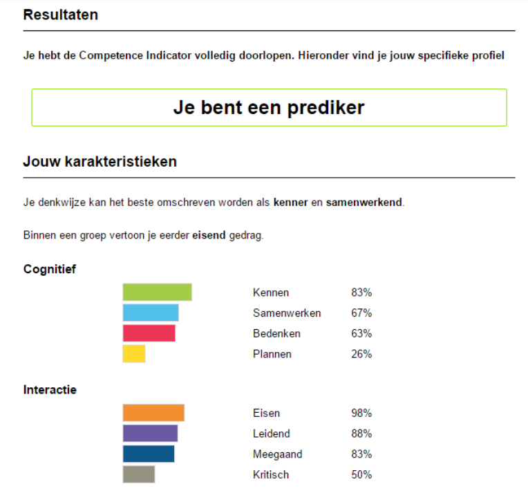
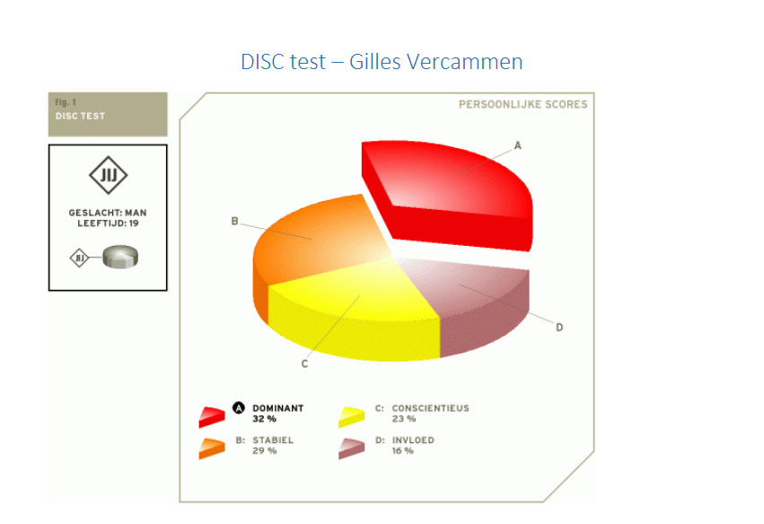

Ofman test
- Kernkwaliteit: Gedreven
- Valkuil: Obsessief
- Allergie: Luiheid
- Uitdaging: Minder fanatiek
- Kernkwaliteit: Kritisch
- Valkuil: Rebels
- Allergie: Ja-knikken
- Uitdaging: Respectvol
- Kernkwaliteit: Perfectionistisch
- Valkuil: Kritisch
- Allergie: Verwaarlozing
- Uitdaging: Sneller tevreden
Competence Indicator
Ik ben het niet volledig eens met de resultaten van interactie, deels doorde vragen die gesteld werden. Ik val volgens mij een beetje in alle luikjes bij interactie. Ik wil graag dat iedereen z’n uiterste best doen voor een project waar ik ook bij betrokken ben, en neem deels makkelijk de leiding als ik voel dat ik hiervoor de beste persoon ben. Ik denk dat het uitging van meegaand doordat het vooral vragen stelde over hoe ik andere personen hun mening aanvaard. Ik aanvaard makkelijk meningen maar ben er ook zeer kritisch voor, wat een beetje mist hier. Ik aanvaard meningen alleen als ik me erin kan vinden en ik ze zelf ook een goed idee vind. Over het cognitief ben ik het grotendeels eens. Ik ben absoluut niet de persoon om te plannen, maar wel om de plannen uit te voeren. Ik vind het belangrijk mijn eigen grenzen te kennen en te weten wat ik wel en niet kan. Ik vind het ook belangrijk dat andere personen dit kunnen. Verder werk ik graag samen met mensen, maar enkel als het personen zijn die motivatie hebben voor het project.
Disc Test
Op het eerste zicht ben ik het eens met wat de test zegt. Na het dominant te hebben gelezen lijkt mij echter dat beiden lage en hoge dominantie bij mij passen. Meeste puntjes van beide kloppen wel rond mijn gedrag en manier van werken. Invloed past ook redelijk goed bij mij, al ben ik wel zeer sociaal. Ik werk echter liever alleen, en accepteer niet alles op het eerste gezicht. Stabiel klopt helemaal. Ik hou van rust en kalmte, en vind het geen probleem om mensen te helpen. Consciëntieus past ook goed. Ik ben iets in het midden daarbij. Ik hou niet persé van regels, en zal ze vaak ook plooien, maar ga ze nooit met opzet breken. Ik ben eerder voorzichtig, en neem niet veel risico’s, en ik pas me ook meestal aan aan de omgeving. Algemeen zijn de testresultaten redelijk goed. Ik ben het eens met het meeste dat eruit gekomen is. Ik vind alleen dat de dominantie net iets te hoog ligt en de invloed te laag.